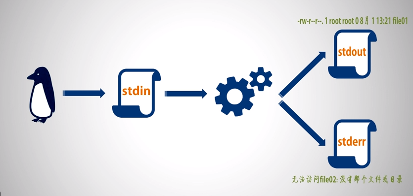

三）重定向与管道
重定向（Redirection）
Unix 三准则
- 一次只做一件事，并做到最好
- 能够与其他程序协同工作
- 能够处理文本流
输出重定向
bash 标准输入输出流
| 输出流名称 | 符号 | 作用 | 文件描述符 |
|---|---|---|---|
| 标准输入流 | stdin | 向命令提供输入 | 0 |
| 标准输出流 | stdout | 显示来自命令的输出 | 1 |
| 标准错误输出流 | stderr | 显示来自命令的错误输出 | 2 |
注：默认情况标准输出和标准错误输出都是在屏幕上输出。标准输入是在屏幕上输入。
Linux 从输入到输出的过程
键盘录入->执行命令->是否正确执行─┬─>正确->标准输出流 （stdout）
└─>错误->标准错误输出流 （stderr）

什么是输出重定向
输出重定向就是将某个程序默认指向 stdout 或者 stderr 的输出文本流转而指向另一个文件，也即程序输出到某个指定文件中而不是输出到终端屏幕或者终端窗口中了。
对输出进行重定向的方法
1° n>
n> ，重定向覆盖。表示将来自文件描述符 n 的输出重定向到文件，如果它存在，将覆盖原有文件内容；如果文件不存在，就创建它。必须对这个文件有写权限。
示例：输出 ls -l ~/test 的结果到 ~/stdout.txt 文件
ls -l ~/test 1>~/stdout.txt # 或 ls -l ~/test >~/stdout.txt
ls ~/test
cat ~/stdout.txt
解释：
该段代码表示将 ls -l ~/test 中列出的文件名，使用文件描述符为 1 的输出（即标准输出流），输出到家文件目录的 stdout.txt 文件。
2° n>>
n>>，重定向追加。表示将来自文件描述符 n 的输出重定向到文件，如果它存在，输出就附加到现有文件后面；如果文件不存在，就创建它。 必须对这个文件有写权限。
示例：追加 ls -l ~/test 的结果到 ~/stdout.txt 文件
ls -l ~/test2 1>>~/stdout.txt
ls ~/test2
cat ~/stdout.txt
解释：
将 ~/test2 中列出的文件名通过标准输出流输出到家目录下的 stdout.txt 文件末尾，并保留之前的内容。
| 注意 |
|---|
| cat 为查看文本操作 |
n> 或 n>> 中的 n 是指 文件描述符。如果 n 省略不写，就代表 1，「标准输出」。将 n 改为 2 则指「标准错误输出」 |
同时进行重定向
ls -l ~/test ~/test2 1>~/stdout.txt 2>~/stderr.txt
将标准输出和标准错误重定向到同一个文件中
自动化脚本或后台作业常常采用这种做法，这样就能够在以后在文件中查看输出。
1° &> 或 &>>
使用 &> 或 &>> 将标准输出和标准错误重定向到同一个位置，如果是 &> 则覆盖原有同名文件，如果是 &>> 则追加到原文件末尾。
示例：
ls -l ~/test ~/test2 &>std.txt
2° m>&n 或 m>>&n
将文件描述符 m 重定向至 n。
示例：将 ls 的标准输出重定向到 test.txt 中，将标准错误输出重定向到标准输出中
ls -l ~/test > test.txt 2>&1 # 等同于 ls -l ~/test &>test.txt
忽略标准输出或标准错误 /dev/null
echo 1 apple\n2 pear\n3 banana > ~/test/fruit.txt 2>/dev/null
写入到 /dev/null 的内容都将被丢弃。
输入重定向
什么是输入重定向
输入重定向指的是让某个程序从指定文件中获取输入而非从 stdin 中 （常常指键盘）获取输入。
方法：使用 < 或 << 操作符将 stdin 重定向为来自文件。
示例 1
tr ' ' '\t' < ~/test/fruit.txt
tr 表示从标准输入中替换字符。
语法：tr [被替换的字符] [替换后的字符]。
示例意为使用制表符替换 fruit.txt 中的空格，并将 fruit.txt 输出到标准输出上。
示例 2 - here-document
Bash 输入重定向的另一种形式。使用 sort -k 完成。
sort -k ：
sort -k 选项表示指定按哪个字段进行排序。每串被空格隔开的字符串被认为时 sort -k 选项的一个字段。
原语法：sort -k[关键字字段序号] [要排序的文本文件]
sort 原本要使用文本文件，here-document 使用 << 以及一个界定符（比如 EOF）这样的方式进行输入，界定符第二次出现时将就将这之间的内容作为一个文件传递给 sort 命令。
输入重定向语法：sort -k[关键字字段序号] <<[自定义的终止字符串]
如：
sort -k2 <<EOF
1 apple
2 pear
3 banana
EOF
输出结果
1 apple
3 banana
2 pear
管道（Pipes）
概述
特殊的输入输出重定向。将一个命令的标准输出重定向为另一个命令的标准输入。
操作符：| （shift+\）
注意：管道右边的命令必须能够接受标准输入流。
常见的能够接受标准输入流的命令
grep、cut、head、tail、less、more、wc、tr、sort
本章重点：grep、cut、wc
示例 1
ls -al /etc | less
将 ls 列出的东西使用 less 查看，以方便逐行或翻页查看
示例 2 - grep
grep 是一个强大的搜索工具，可以使用正则表达式搜索文本。
语法：grep [查找的关键字] [查找的目标文件]
ls -al /etc | grep 'ssh'
示例 3 - 文本提取和统计
cut - 文本切割命令
用于切割文本文件或者标准输出中的指定列并输出。
1、cut -c[n]
表示按字符列序号切割文本。n 为切割的字符列序号，可以是一个数字，也可以是多个数字，用英文逗号隔开。
cat ~/test/hello.sh | cut -c1,2
表示显示 hello.sh 的每一行的前两列字符。
2、cut -f[n] -d"分隔符"
表示按分隔符切割的字段切割文本。n 表示字段的序号，d 表示自定义的分隔符。
cat /etc/passwd | cut -f1 -d":"
表示显示以 : 为分隔符的每行第一个字段的内容。
wc -文本统计命令
语法：wc [文件目录]
wc 输出的格式：行数 单词数 字节数 文件目录
- 仅统计文本行数：
wc -l /etc/passwd
示例：
ls -al ~ | cut -c1 | grep "d" | wc -l
表示统计当前用户家目录下目录文件的数目。
注意事项
管道不会传递错误输出